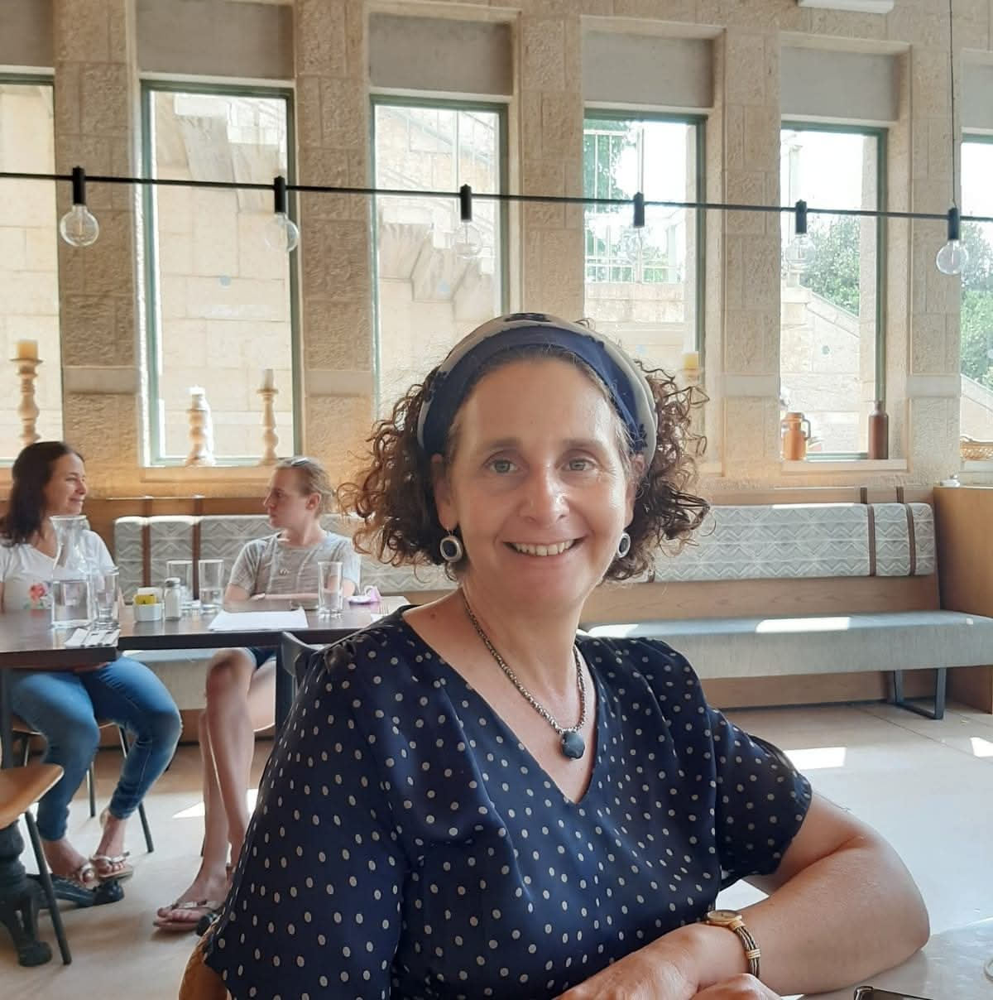

פסיכולוגית קלינית בכירה
מרחב טיפולי חם ובטוח בירושלים
עם למעלה מעשרים וחמש שנות ניסיון, אני מלווה מבוגרים ומתבגרים בתהליכי צמיחה והחלמה — מתוך אמונה בכוח הריפוי של מרחב טיפולי אמפתי ומקצועי.

אני מאמינה שכל אדם טומן בתוכו את הכוח לצמוח, להחלים ולהשתנות. תפקידי כמטפלת הוא לספק את המרחב הבטוח, החם והמקצועי שבו תהליך זה יכול לקרות.
במשך למעלה מעשרים וחמש שנה, אני מלווה מבוגרים ומתבגרים המתמודדים עם טראומה, חרדה, דיכאון, משברי חיים וקשיים בינאישיים. הגישה שלי היא פסיכודינמית, ואני משלבת בה את שיטת ה-EMDR — גישה מבוססת מחקר לטיפול בטראומה ובחרדה.
כיום אני משמשת כפסיכולוגית ראשית במרפאת טלביה של קופת חולים כללית בירושלים, ומנהלת במקביל קליניקה פרטית. לצד העבודה הטיפולית, אני מדריכה פסיכולוגים בהתמחות ומובילה קבוצות טיפוליות.
פסיכולוגיה חינוכית וקלינית, האוניברסיטה העברית, ירושלים
פסיכולוגיה קלינית, פסיכותרפיה ופסיכודיאגנוסטיקה
המרכז הישראלי ל-EMDR, הסמכה מ-2022
פסיכולוגית ראשית, מרפאת טלביה, קופ"ח כללית, ירושלים
אני מטפלת במבוגרים ומתבגרים בקשת רחבה של קשיים נפשיים ורגשיים, תוך התאמת הגישה לצרכיו הייחודיים של כל אדם.
טיפול בחוויות טראומטיות, PTSD ולחצים מורכבים, בשיטת ה-EMDR ובגישה פסיכודינמית — לשחרור מהעבר ולבניית עתיד.
ליווי מקצועי לאנשים המתמודדים עם הפרעות חרדה, פוביות, פאניקה, דיכאון ומצבי רוח — בדרך להקלה ולשינוי.
תמיכה בתקופות מאתגרות — שכול ואובדן, גירושין, שינויים תעסוקתיים, משברי זהות ומעברי חיים — בדרך לגמישות ולחוסן.
עבודה על דפוסי קשר, גבולות, קשיים ביחסים אינטימיים, ניהול קונפליקטים ובניית מערכות יחסים בריאות ומספקות.
ליווי מיוחד לניצולי פגיעות מיניות — בפרט לאלו שנפגעו בילדות — בדרך לריפוי, להעצמה ולשיקום הזהות.
הנחיה של קבוצות טיפוליות — כוחה של הקבוצה ליצור שינוי עמוק ומשמעותי, דרך חיבור, הכלה ועבודה משותפת.
מובילה את הצוות הפסיכולוגי במרפאה, מדריכה פסיכולוגים בהתמחות ומנהלת תהליכים טיפוליים מורכבים עבור מגוון מטופלים.
פסיכותרפיה בגישה דינמית, טיפולים בטראומה בשיטת EMDR, טיפולים קבוצתיים והדרכת מתמחים בפסיכולוגיה קלינית.
הנחיה של קבוצה טיפולית למבוגרים שנפגעו מינית בילדות, יחד עם הפסיכולוג עמוס ספיבק.
טיפול במבוגרים ומתבגרים: משברי חיים, טראומה, פגיעות מיניות, הפרעות חרדה, דיכאון וקשיים בינאישיים. גישה דינמית ו-EMDR.
הדרכת הצוות הטיפולי ואחריות על ההתמחות במרכז החירום החרדי לילדים בירושלים.
עשור של עבודה טיפולית, ניהול והדרכה בפנימייה הטיפולית, כולל התמחות מעמיקה בנושא פגיעות מיניות.
פסיכולוגיה חינוכית וקלינית של הילד, ירושלים
פסיכולוגיה
פסיכולוגיה קלינית, פסיכותרפיה ופסיכודיאגנוסטיקה
המרכז הישראלי ל-EMDR
במערך בריאות הנפש של כללית, ירושלים
המכון לאנליזה קבוצתית, עם הדרכה מתמשכת של גליה נתיב
אם אתם מרגישים שהגיע הזמן לעשות שינוי, אשמח לשמוע מכם ולקבוע פגישת היכרות.